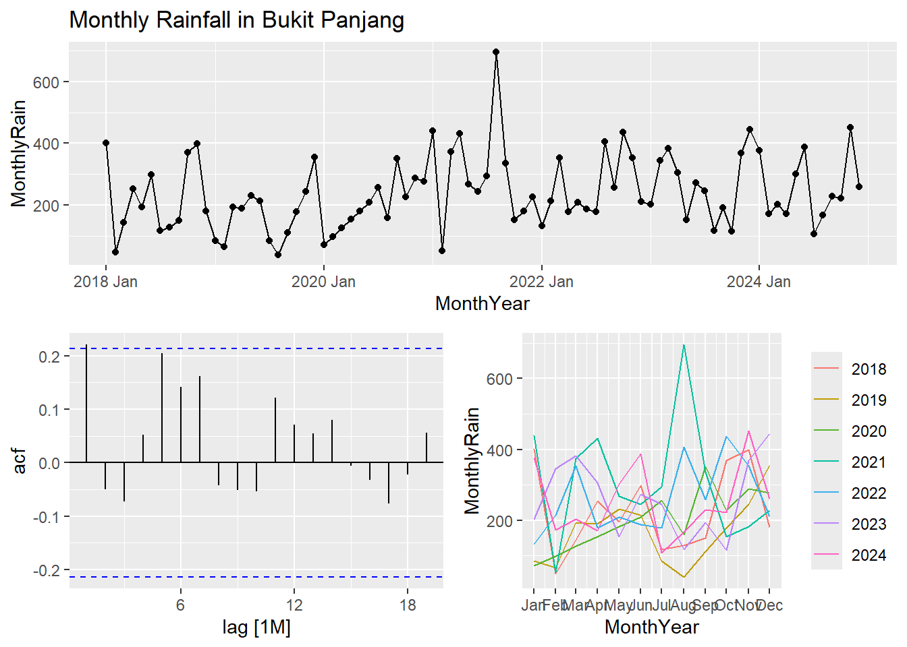
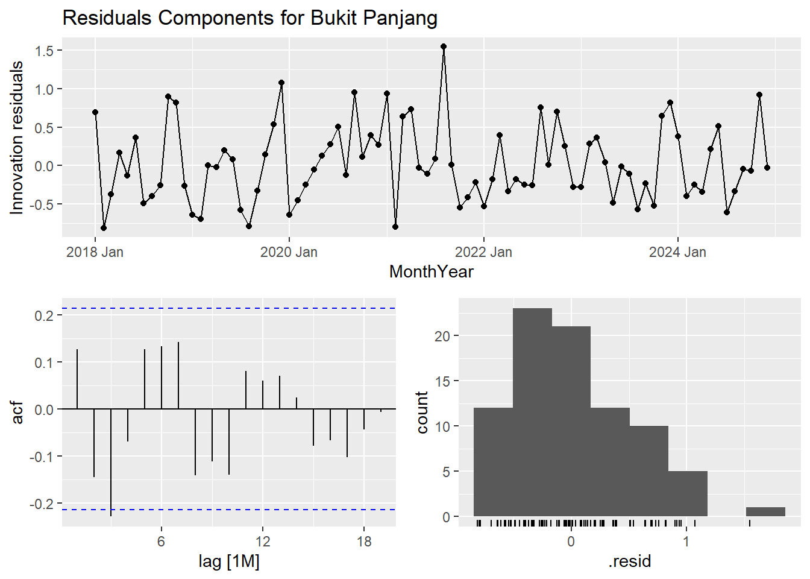
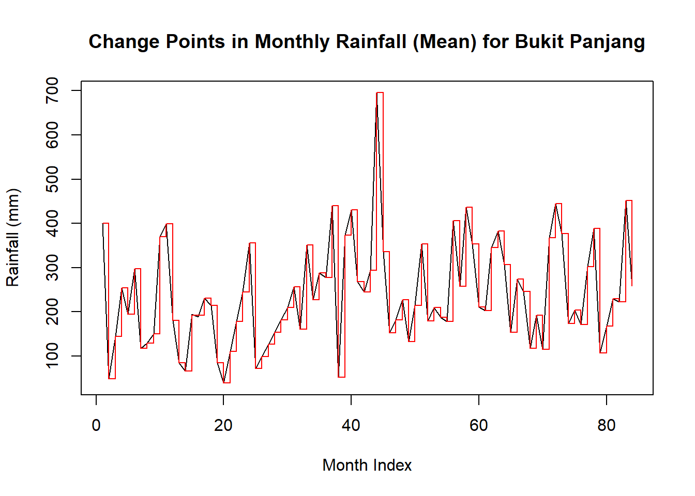

pacman::p_load(tidyverse, lubridate, SmartEDA, ggplot2, tsibble, feasts, seasonal,
imputeTS, fable, changepoint)Take-home Exercise 3: Spatiotemporal Rainfall Analysis
Overview
1. Getting Started
weather <- read.csv("data/weather_data.csv")
active_stations <- read.csv("data/active_rainfall_stations.csv")2. Data Pre-processing
# remove () for consistent naming
weather$Station <- gsub("[()]", "", trimws(as.character(weather$Station)))
active_stations$Station.Name <- gsub("[()]", "", trimws(as.character(active_stations$Station.Name)))Now that both active stations and weather data have consistent naming, with 27 distinct values, we filter stations that are active.
weather_active <- weather %>%
filter(Station %in% active_stations$Station.Name)weather_active <- weather_active %>%
select(Station, Year, Month, Day, Daily.Rainfall.Total..mm.) %>%
filter(!is.na(Daily.Rainfall.Total..mm.)) %>%
merge(active_stations, by.x = "Station", by.y = "Station.Name") %>%
select(Station, Year, Month, Day, Daily.Rainfall.Total..mm., Latitude, Longitude) %>%
mutate(Date = make_date(Year, Month, Day), Station = as.factor(Station)) %>%
arrange(Station, Date)3. EDA
weather_active %>% ExpData(type = 1) Descriptions Value
1 Sample size (nrow) 64853
2 No. of variables (ncol) 8
3 No. of numeric/interger variables 6
4 No. of factor variables 1
5 No. of text variables 0
6 No. of logical variables 0
7 No. of identifier variables 0
8 No. of date variables 1
9 No. of zero variance variables (uniform) 0
10 %. of variables having complete cases 100% (8)
11 %. of variables having >0% and <50% missing cases 0% (0)
12 %. of variables having >=50% and <90% missing cases 0% (0)
13 %. of variables having >=90% missing cases 0% (0)weather_active %>% ExpData(type = 2) Index Variable_Name Variable_Type Sample_n Missing_Count
1 1 Station factor 64853 0
2 2 Year numeric 64853 0
3 3 Month numeric 64853 0
4 4 Day numeric 64853 0
5 5 Daily.Rainfall.Total..mm. numeric 64853 0
6 6 Latitude numeric 64853 0
7 7 Longitude numeric 64853 0
8 8 Date Date 64853 0
Per_of_Missing No_of_distinct_values
1 0 27
2 0 7
3 0 12
4 0 31
5 0 679
6 0 27
7 0 27
8 0 2557# explore how rainfall varies across stations
ExpNumStat(weather_active,
by = "GA",
gp = "Station",
round = 2) Vname Group TN nNeg nZero
3 Daily.Rainfall.Total..mm. Station:All 64853 0 29880
8 Daily.Rainfall.Total..mm. Station:Botanic Garden 1882 0 860
13 Daily.Rainfall.Total..mm. Station:Bukit Panjang 2416 0 1025
18 Daily.Rainfall.Total..mm. Station:Bukit Timah 2541 0 1141
23 Daily.Rainfall.Total..mm. Station:Buona Vista 2331 0 1110
28 Daily.Rainfall.Total..mm. Station:Choa Chu Kang Central 2482 0 1071
33 Daily.Rainfall.Total..mm. Station:Jurong Pier 2497 0 1099
38 Daily.Rainfall.Total..mm. Station:Kent Ridge 2367 0 1072
43 Daily.Rainfall.Total..mm. Station:Kranji Reservoir 2507 0 1059
48 Daily.Rainfall.Total..mm. Station:Lim Chu Kang 2453 0 1038
53 Daily.Rainfall.Total..mm. Station:Lower Peirce Reservoir 2530 0 1081
58 Daily.Rainfall.Total..mm. Station:Macritchie Reservoir 2515 0 1071
63 Daily.Rainfall.Total..mm. Station:Mandai 2526 0 1045
68 Daily.Rainfall.Total..mm. Station:Marine Parade 2532 0 1283
73 Daily.Rainfall.Total..mm. Station:Nicoll Highway 2523 0 1221
78 Daily.Rainfall.Total..mm. Station:Pasir Ris Central 2533 0 1246
83 Daily.Rainfall.Total..mm. Station:Pasir Ris West 2222 0 1098
88 Daily.Rainfall.Total..mm. Station:Punggol 2557 0 1204
93 Daily.Rainfall.Total..mm. Station:Queenstown 2552 0 1199
98 Daily.Rainfall.Total..mm. Station:Serangoon 889 0 674
103 Daily.Rainfall.Total..mm. Station:Simei 2435 0 1239
108 Daily.Rainfall.Total..mm. Station:Somerset Road 2542 0 1191
113 Daily.Rainfall.Total..mm. Station:Tanjong Katong 2553 0 1237
118 Daily.Rainfall.Total..mm. Station:Toa Payoh 2547 0 1151
123 Daily.Rainfall.Total..mm. Station:Tuas 2553 0 1161
128 Daily.Rainfall.Total..mm. Station:Ulu Pandan 2478 0 1103
133 Daily.Rainfall.Total..mm. Station:Upper Peirce Reservoir 2396 0 1023
138 Daily.Rainfall.Total..mm. Station:Whampoa 2494 0 1178
2 Day Station:All 64853 0 0
7 Day Station:Botanic Garden 1882 0 0
12 Day Station:Bukit Panjang 2416 0 0
17 Day Station:Bukit Timah 2541 0 0
22 Day Station:Buona Vista 2331 0 0
27 Day Station:Choa Chu Kang Central 2482 0 0
32 Day Station:Jurong Pier 2497 0 0
37 Day Station:Kent Ridge 2367 0 0
42 Day Station:Kranji Reservoir 2507 0 0
47 Day Station:Lim Chu Kang 2453 0 0
52 Day Station:Lower Peirce Reservoir 2530 0 0
57 Day Station:Macritchie Reservoir 2515 0 0
62 Day Station:Mandai 2526 0 0
67 Day Station:Marine Parade 2532 0 0
72 Day Station:Nicoll Highway 2523 0 0
77 Day Station:Pasir Ris Central 2533 0 0
82 Day Station:Pasir Ris West 2222 0 0
87 Day Station:Punggol 2557 0 0
92 Day Station:Queenstown 2552 0 0
97 Day Station:Serangoon 889 0 0
102 Day Station:Simei 2435 0 0
107 Day Station:Somerset Road 2542 0 0
112 Day Station:Tanjong Katong 2553 0 0
117 Day Station:Toa Payoh 2547 0 0
122 Day Station:Tuas 2553 0 0
127 Day Station:Ulu Pandan 2478 0 0
132 Day Station:Upper Peirce Reservoir 2396 0 0
137 Day Station:Whampoa 2494 0 0
4 Latitude Station:All 64853 0 0
9 Latitude Station:Botanic Garden 1882 0 0
14 Latitude Station:Bukit Panjang 2416 0 0
19 Latitude Station:Bukit Timah 2541 0 0
24 Latitude Station:Buona Vista 2331 0 0
29 Latitude Station:Choa Chu Kang Central 2482 0 0
34 Latitude Station:Jurong Pier 2497 0 0
39 Latitude Station:Kent Ridge 2367 0 0
44 Latitude Station:Kranji Reservoir 2507 0 0
49 Latitude Station:Lim Chu Kang 2453 0 0
54 Latitude Station:Lower Peirce Reservoir 2530 0 0
59 Latitude Station:Macritchie Reservoir 2515 0 0
64 Latitude Station:Mandai 2526 0 0
69 Latitude Station:Marine Parade 2532 0 0
74 Latitude Station:Nicoll Highway 2523 0 0
79 Latitude Station:Pasir Ris Central 2533 0 0
84 Latitude Station:Pasir Ris West 2222 0 0
89 Latitude Station:Punggol 2557 0 0
94 Latitude Station:Queenstown 2552 0 0
99 Latitude Station:Serangoon 889 0 0
104 Latitude Station:Simei 2435 0 0
109 Latitude Station:Somerset Road 2542 0 0
114 Latitude Station:Tanjong Katong 2553 0 0
119 Latitude Station:Toa Payoh 2547 0 0
124 Latitude Station:Tuas 2553 0 0
129 Latitude Station:Ulu Pandan 2478 0 0
134 Latitude Station:Upper Peirce Reservoir 2396 0 0
139 Latitude Station:Whampoa 2494 0 0
5 Longitude Station:All 64853 0 0
10 Longitude Station:Botanic Garden 1882 0 0
15 Longitude Station:Bukit Panjang 2416 0 0
20 Longitude Station:Bukit Timah 2541 0 0
25 Longitude Station:Buona Vista 2331 0 0
30 Longitude Station:Choa Chu Kang Central 2482 0 0
35 Longitude Station:Jurong Pier 2497 0 0
40 Longitude Station:Kent Ridge 2367 0 0
45 Longitude Station:Kranji Reservoir 2507 0 0
50 Longitude Station:Lim Chu Kang 2453 0 0
55 Longitude Station:Lower Peirce Reservoir 2530 0 0
60 Longitude Station:Macritchie Reservoir 2515 0 0
65 Longitude Station:Mandai 2526 0 0
70 Longitude Station:Marine Parade 2532 0 0
75 Longitude Station:Nicoll Highway 2523 0 0
80 Longitude Station:Pasir Ris Central 2533 0 0
85 Longitude Station:Pasir Ris West 2222 0 0
90 Longitude Station:Punggol 2557 0 0
95 Longitude Station:Queenstown 2552 0 0
100 Longitude Station:Serangoon 889 0 0
105 Longitude Station:Simei 2435 0 0
110 Longitude Station:Somerset Road 2542 0 0
115 Longitude Station:Tanjong Katong 2553 0 0
120 Longitude Station:Toa Payoh 2547 0 0
125 Longitude Station:Tuas 2553 0 0
130 Longitude Station:Ulu Pandan 2478 0 0
135 Longitude Station:Upper Peirce Reservoir 2396 0 0
140 Longitude Station:Whampoa 2494 0 0
1 Month Station:All 64853 0 0
6 Month Station:Botanic Garden 1882 0 0
11 Month Station:Bukit Panjang 2416 0 0
16 Month Station:Bukit Timah 2541 0 0
21 Month Station:Buona Vista 2331 0 0
26 Month Station:Choa Chu Kang Central 2482 0 0
31 Month Station:Jurong Pier 2497 0 0
36 Month Station:Kent Ridge 2367 0 0
41 Month Station:Kranji Reservoir 2507 0 0
46 Month Station:Lim Chu Kang 2453 0 0
51 Month Station:Lower Peirce Reservoir 2530 0 0
56 Month Station:Macritchie Reservoir 2515 0 0
61 Month Station:Mandai 2526 0 0
66 Month Station:Marine Parade 2532 0 0
71 Month Station:Nicoll Highway 2523 0 0
76 Month Station:Pasir Ris Central 2533 0 0
81 Month Station:Pasir Ris West 2222 0 0
86 Month Station:Punggol 2557 0 0
91 Month Station:Queenstown 2552 0 0
96 Month Station:Serangoon 889 0 0
101 Month Station:Simei 2435 0 0
106 Month Station:Somerset Road 2542 0 0
111 Month Station:Tanjong Katong 2553 0 0
116 Month Station:Toa Payoh 2547 0 0
121 Month Station:Tuas 2553 0 0
126 Month Station:Ulu Pandan 2478 0 0
131 Month Station:Upper Peirce Reservoir 2396 0 0
136 Month Station:Whampoa 2494 0 0
nPos NegInf PosInf NA_Value Per_of_Missing sum min max mean
3 34973 0 0 0 0 464882.80 0.00 247.20 7.17
8 1022 0 0 0 0 14731.90 0.00 160.40 7.83
13 1391 0 0 0 0 19544.10 0.00 235.60 8.09
18 1400 0 0 0 0 19095.80 0.00 156.80 7.52
23 1221 0 0 0 0 16704.90 0.00 167.40 7.17
28 1411 0 0 0 0 19461.50 0.00 144.20 7.84
33 1398 0 0 0 0 20172.30 0.00 121.00 8.08
38 1295 0 0 0 0 18518.60 0.00 179.60 7.82
43 1448 0 0 0 0 19236.40 0.00 148.40 7.67
48 1415 0 0 0 0 17674.30 0.00 111.40 7.21
53 1449 0 0 0 0 20071.70 0.00 157.50 7.93
58 1444 0 0 0 0 18515.30 0.00 165.60 7.36
63 1481 0 0 0 0 19479.30 0.00 247.20 7.71
68 1249 0 0 0 0 14786.60 0.00 195.40 5.84
73 1302 0 0 0 0 16978.50 0.00 163.80 6.73
78 1287 0 0 0 0 15842.70 0.00 185.80 6.25
83 1124 0 0 0 0 12452.40 0.00 150.00 5.60
88 1353 0 0 0 0 17390.10 0.00 168.80 6.80
93 1353 0 0 0 0 17490.40 0.00 147.60 6.85
98 215 0 0 0 0 3165.90 0.00 83.60 3.56
103 1196 0 0 0 0 15604.30 0.00 182.60 6.41
108 1351 0 0 0 0 16528.20 0.00 141.60 6.50
113 1316 0 0 0 0 16215.50 0.00 190.60 6.35
118 1396 0 0 0 0 18887.00 0.00 140.00 7.42
123 1392 0 0 0 0 20559.00 0.00 134.40 8.05
128 1375 0 0 0 0 19560.60 0.00 179.80 7.89
133 1373 0 0 0 0 18621.90 0.00 133.20 7.77
138 1316 0 0 0 0 17593.60 0.00 154.60 7.05
2 64853 0 0 0 0 1020567.00 1.00 31.00 15.74
7 1882 0 0 0 0 29570.00 1.00 31.00 15.71
12 2416 0 0 0 0 38053.00 1.00 31.00 15.75
17 2541 0 0 0 0 39937.00 1.00 31.00 15.72
22 2331 0 0 0 0 36524.00 1.00 31.00 15.67
27 2482 0 0 0 0 38856.00 1.00 31.00 15.66
32 2497 0 0 0 0 39387.00 1.00 31.00 15.77
37 2367 0 0 0 0 37002.00 1.00 31.00 15.63
42 2507 0 0 0 0 39560.00 1.00 31.00 15.78
47 2453 0 0 0 0 38528.00 1.00 31.00 15.71
52 2530 0 0 0 0 39749.00 1.00 31.00 15.71
57 2515 0 0 0 0 39611.00 1.00 31.00 15.75
62 2526 0 0 0 0 39587.00 1.00 31.00 15.67
67 2532 0 0 0 0 39982.00 1.00 31.00 15.79
72 2523 0 0 0 0 39860.00 1.00 31.00 15.80
77 2533 0 0 0 0 39793.00 1.00 31.00 15.71
82 2222 0 0 0 0 34948.00 1.00 31.00 15.73
87 2557 0 0 0 0 40224.00 1.00 31.00 15.73
92 2552 0 0 0 0 40176.00 1.00 31.00 15.74
97 889 0 0 0 0 14404.00 1.00 31.00 16.20
102 2435 0 0 0 0 38172.00 1.00 31.00 15.68
107 2542 0 0 0 0 40020.00 1.00 31.00 15.74
112 2553 0 0 0 0 40149.00 1.00 31.00 15.73
117 2547 0 0 0 0 40134.00 1.00 31.00 15.76
122 2553 0 0 0 0 40168.00 1.00 31.00 15.73
127 2478 0 0 0 0 39113.00 1.00 31.00 15.78
132 2396 0 0 0 0 37666.00 1.00 31.00 15.72
137 2494 0 0 0 0 39394.00 1.00 31.00 15.80
4 64853 0 0 0 0 87212.19 1.28 1.44 1.34
9 1882 0 0 0 0 2462.97 1.31 1.31 1.31
14 2416 0 0 0 0 3339.64 1.38 1.38 1.38
19 2541 0 0 0 0 3351.83 1.32 1.32 1.32
24 2331 0 0 0 0 2993.24 1.28 1.28 1.28
29 2482 0 0 0 0 3430.37 1.38 1.38 1.38
34 2497 0 0 0 0 3266.58 1.31 1.31 1.31
39 2367 0 0 0 0 3058.87 1.29 1.29 1.29
44 2507 0 0 0 0 3606.82 1.44 1.44 1.44
49 2453 0 0 0 0 3529.38 1.44 1.44 1.44
54 2530 0 0 0 0 3466.10 1.37 1.37 1.37
59 2515 0 0 0 0 3374.63 1.34 1.34 1.34
64 2526 0 0 0 0 3553.32 1.41 1.41 1.41
69 2532 0 0 0 0 3304.26 1.30 1.30 1.30
74 2523 0 0 0 0 3267.28 1.29 1.29 1.29
79 2533 0 0 0 0 3464.89 1.37 1.37 1.37
84 2222 0 0 0 0 3080.80 1.39 1.39 1.39
89 2557 0 0 0 0 3586.96 1.40 1.40 1.40
94 2552 0 0 0 0 3301.52 1.29 1.29 1.29
99 889 0 0 0 0 1189.22 1.34 1.34 1.34
104 2435 0 0 0 0 3273.37 1.34 1.34 1.34
109 2542 0 0 0 0 3305.36 1.30 1.30 1.30
114 2553 0 0 0 0 3336.77 1.31 1.31 1.31
119 2547 0 0 0 0 3417.31 1.34 1.34 1.34
124 2553 0 0 0 0 3369.70 1.32 1.32 1.32
129 2478 0 0 0 0 3301.94 1.33 1.33 1.33
134 2396 0 0 0 0 3283.48 1.37 1.37 1.37
139 2494 0 0 0 0 3295.57 1.32 1.32 1.32
5 64853 0 0 0 0 6732989.28 103.66 103.95 103.82
10 1882 0 0 0 0 195385.48 103.82 103.82 103.82
15 2416 0 0 0 0 250685.85 103.76 103.76 103.76
20 2541 0 0 0 0 263804.84 103.82 103.82 103.82
25 2331 0 0 0 0 241931.69 103.79 103.79 103.79
30 2482 0 0 0 0 257477.96 103.74 103.74 103.74
35 2497 0 0 0 0 258963.87 103.71 103.71 103.71
40 2367 0 0 0 0 245650.81 103.78 103.78 103.78
45 2507 0 0 0 0 260066.15 103.74 103.74 103.74
50 2453 0 0 0 0 254380.27 103.70 103.70 103.70
55 2530 0 0 0 0 262682.56 103.83 103.83 103.83
60 2515 0 0 0 0 261142.26 103.83 103.83 103.83
65 2526 0 0 0 0 262156.36 103.78 103.78 103.78
70 2532 0 0 0 0 263103.16 103.91 103.91 103.91
75 2523 0 0 0 0 262044.33 103.86 103.86 103.86
80 2533 0 0 0 0 263302.56 103.95 103.95 103.95
85 2222 0 0 0 0 230957.57 103.94 103.94 103.94
90 2557 0 0 0 0 265696.59 103.91 103.91 103.91
95 2552 0 0 0 0 264930.01 103.81 103.81 103.81
100 889 0 0 0 0 92337.05 103.87 103.87 103.87
105 2435 0 0 0 0 253103.88 103.94 103.94 103.94
110 2542 0 0 0 0 263954.16 103.84 103.84 103.84
115 2553 0 0 0 0 265232.96 103.89 103.89 103.89
120 2547 0 0 0 0 264509.77 103.85 103.85 103.85
125 2553 0 0 0 0 264647.30 103.66 103.66 103.66
130 2478 0 0 0 0 257104.89 103.75 103.75 103.75
135 2396 0 0 0 0 248715.82 103.80 103.80 103.80
140 2494 0 0 0 0 259021.10 103.86 103.86 103.86
1 64853 0 0 0 0 422448.00 1.00 12.00 6.51
6 1882 0 0 0 0 11969.00 1.00 12.00 6.36
11 2416 0 0 0 0 16141.00 1.00 12.00 6.68
16 2541 0 0 0 0 16612.00 1.00 12.00 6.54
21 2331 0 0 0 0 14754.00 1.00 12.00 6.33
26 2482 0 0 0 0 15956.00 1.00 12.00 6.43
31 2497 0 0 0 0 16375.00 1.00 12.00 6.56
36 2367 0 0 0 0 15783.00 1.00 12.00 6.67
41 2507 0 0 0 0 16322.00 1.00 12.00 6.51
46 2453 0 0 0 0 15916.00 1.00 12.00 6.49
51 2530 0 0 0 0 16513.00 1.00 12.00 6.53
56 2515 0 0 0 0 16478.00 1.00 12.00 6.55
61 2526 0 0 0 0 16479.00 1.00 12.00 6.52
66 2532 0 0 0 0 16494.00 1.00 12.00 6.51
71 2523 0 0 0 0 16427.00 1.00 12.00 6.51
76 2533 0 0 0 0 16415.00 1.00 12.00 6.48
81 2222 0 0 0 0 14462.00 1.00 12.00 6.51
86 2557 0 0 0 0 16678.00 1.00 12.00 6.52
91 2552 0 0 0 0 16635.00 1.00 12.00 6.52
96 889 0 0 0 0 5219.00 1.00 12.00 5.87
101 2435 0 0 0 0 16109.00 1.00 12.00 6.62
106 2542 0 0 0 0 16643.00 1.00 12.00 6.55
111 2553 0 0 0 0 16661.00 1.00 12.00 6.53
116 2547 0 0 0 0 16594.00 1.00 12.00 6.52
121 2553 0 0 0 0 16643.00 1.00 12.00 6.52
126 2478 0 0 0 0 16323.00 1.00 12.00 6.59
131 2396 0 0 0 0 15771.00 1.00 12.00 6.58
136 2494 0 0 0 0 16076.00 1.00 12.00 6.45
median SD CV IQR Skewness Kurtosis
3 0.20 14.91 2.08 7.20 3.63 19.51
8 0.20 15.90 2.03 8.40 3.27 14.37
13 0.60 16.15 2.00 9.00 3.97 27.17
18 0.40 14.84 1.97 8.40 3.31 15.33
23 0.20 15.55 2.17 6.70 3.77 19.49
28 0.40 15.39 1.96 9.00 3.29 14.76
33 0.40 15.63 1.93 9.00 2.94 10.39
38 0.40 16.52 2.11 7.60 3.68 18.84
43 0.60 14.98 1.95 8.20 3.13 13.32
48 0.40 14.13 1.96 7.80 3.07 11.67
53 0.40 15.68 1.98 8.80 3.26 14.42
58 0.40 14.74 2.00 7.60 3.40 16.45
63 0.50 15.78 2.05 8.40 4.11 30.95
68 0.00 13.68 2.34 5.20 4.82 37.56
73 0.20 14.66 2.18 6.00 3.70 18.88
78 0.20 14.06 2.25 5.80 4.42 31.56
83 0.20 12.43 2.22 5.00 3.70 19.27
88 0.20 14.26 2.10 7.00 3.88 22.77
93 0.20 14.38 2.10 6.40 3.50 16.40
98 0.00 10.40 2.92 0.00 4.01 18.22
103 0.00 14.82 2.31 5.60 4.45 30.06
108 0.20 13.50 2.08 6.35 3.36 15.21
113 0.20 14.21 2.24 5.40 4.43 31.43
118 0.40 15.04 2.03 7.60 3.39 15.14
123 0.40 16.24 2.02 8.20 3.25 13.40
128 0.40 16.01 2.03 8.20 3.59 19.16
133 0.40 15.01 1.93 8.60 3.03 11.55
138 0.20 14.43 2.05 7.20 3.36 15.43
2 16.00 8.81 0.56 15.00 0.01 -1.20
7 16.00 8.80 0.56 15.00 0.01 -1.20
12 16.00 8.79 0.56 15.00 0.00 -1.19
17 16.00 8.81 0.56 15.00 0.01 -1.20
22 16.00 8.80 0.56 15.00 0.01 -1.19
27 16.00 8.80 0.56 15.00 0.02 -1.19
32 16.00 8.81 0.56 15.00 0.00 -1.20
37 16.00 8.84 0.57 15.00 0.02 -1.20
42 16.00 8.79 0.56 15.00 0.00 -1.19
47 16.00 8.82 0.56 15.00 0.01 -1.20
52 16.00 8.82 0.56 15.00 0.01 -1.20
57 16.00 8.78 0.56 15.00 0.00 -1.19
62 16.00 8.80 0.56 15.00 0.02 -1.19
67 16.00 8.80 0.56 15.00 -0.01 -1.19
72 16.00 8.82 0.56 15.00 -0.01 -1.20
77 16.00 8.80 0.56 15.00 0.01 -1.20
82 16.00 8.81 0.56 15.00 0.01 -1.20
87 16.00 8.80 0.56 15.00 0.01 -1.19
92 16.00 8.81 0.56 15.00 0.00 -1.20
97 16.00 9.02 0.56 17.00 -0.06 -1.27
102 16.00 8.81 0.56 15.00 0.01 -1.19
107 16.00 8.78 0.56 15.00 0.00 -1.19
112 16.00 8.80 0.56 15.00 0.01 -1.20
117 16.00 8.81 0.56 15.00 0.00 -1.19
122 16.00 8.81 0.56 15.00 0.01 -1.20
127 16.00 8.80 0.56 15.00 0.00 -1.19
132 16.00 8.79 0.56 15.00 0.01 -1.20
137 16.00 8.78 0.56 15.00 -0.01 -1.19
4 1.34 0.04 0.03 0.08 0.59 -0.71
9 1.31 0.00 0.00 0.00 NaN NaN
14 1.38 0.00 0.00 0.00 NaN NaN
19 1.32 0.00 0.00 0.00 NaN NaN
24 1.28 0.00 0.00 0.00 NaN NaN
29 1.38 0.00 0.00 0.00 NaN NaN
34 1.31 0.00 0.00 0.00 NaN NaN
39 1.29 0.00 0.00 0.00 NaN NaN
44 1.44 0.00 0.00 0.00 NaN NaN
49 1.44 0.00 0.00 0.00 NaN NaN
54 1.37 0.00 0.00 0.00 NaN NaN
59 1.34 0.00 0.00 0.00 NaN NaN
64 1.41 0.00 0.00 0.00 NaN NaN
69 1.30 0.00 0.00 0.00 NaN NaN
74 1.29 0.00 0.00 0.00 NaN NaN
79 1.37 0.00 0.00 0.00 NaN NaN
84 1.39 0.00 0.00 0.00 NaN NaN
89 1.40 0.00 0.00 0.00 NaN NaN
94 1.29 0.00 0.00 0.00 NaN NaN
99 1.34 0.00 0.00 0.00 NaN NaN
104 1.34 0.00 0.00 0.00 NaN NaN
109 1.30 0.00 0.00 0.00 NaN NaN
114 1.31 0.00 0.00 0.00 NaN NaN
119 1.34 0.00 0.00 0.00 NaN NaN
124 1.32 0.00 0.00 0.00 NaN NaN
129 1.33 0.00 0.00 0.00 NaN NaN
134 1.37 0.00 0.00 0.00 NaN NaN
139 1.32 0.00 0.00 0.00 NaN NaN
5 103.82 0.08 0.00 0.10 -0.07 -0.68
10 103.82 0.00 0.00 0.00 NaN NaN
15 103.76 0.00 0.00 0.00 NaN NaN
20 103.82 0.00 0.00 0.00 NaN NaN
25 103.79 0.00 0.00 0.00 NaN NaN
30 103.74 0.00 0.00 0.00 NaN NaN
35 103.71 0.00 0.00 0.00 NaN NaN
40 103.78 0.00 0.00 0.00 NaN NaN
45 103.74 0.00 0.00 0.00 NaN NaN
50 103.70 0.00 0.00 0.00 NaN NaN
55 103.83 0.00 0.00 0.00 NaN NaN
60 103.83 0.00 0.00 0.00 NaN NaN
65 103.78 0.00 0.00 0.00 NaN NaN
70 103.91 0.00 0.00 0.00 NaN NaN
75 103.86 0.00 0.00 0.00 NaN NaN
80 103.95 0.00 0.00 0.00 NaN NaN
85 103.94 0.00 0.00 0.00 NaN NaN
90 103.91 0.00 0.00 0.00 NaN NaN
95 103.81 0.00 0.00 0.00 NaN NaN
100 103.87 0.00 0.00 0.00 NaN NaN
105 103.94 0.00 0.00 0.00 NaN NaN
110 103.84 0.00 0.00 0.00 NaN NaN
115 103.89 0.00 0.00 0.00 NaN NaN
120 103.85 0.00 0.00 0.00 NaN NaN
125 103.66 0.00 0.00 0.00 NaN NaN
130 103.75 0.00 0.00 0.00 NaN NaN
135 103.80 0.00 0.00 0.00 NaN NaN
140 103.86 0.00 0.00 0.00 NaN NaN
1 7.00 3.45 0.53 6.00 -0.01 -1.21
6 6.00 3.51 0.55 6.00 0.03 -1.24
11 7.00 3.47 0.52 6.00 -0.10 -1.19
16 7.00 3.44 0.53 6.00 -0.01 -1.20
21 6.00 3.40 0.54 6.00 0.08 -1.17
26 6.00 3.42 0.53 6.00 0.00 -1.20
31 7.00 3.44 0.53 6.00 -0.02 -1.20
36 7.00 3.40 0.51 6.00 -0.08 -1.16
41 7.00 3.45 0.53 6.00 0.00 -1.21
46 7.00 3.46 0.53 6.00 0.00 -1.22
51 7.00 3.44 0.53 6.00 0.00 -1.20
56 7.00 3.44 0.52 6.00 -0.02 -1.21
61 7.00 3.44 0.53 5.75 -0.01 -1.21
66 7.00 3.46 0.53 6.00 0.00 -1.22
71 7.00 3.43 0.53 5.00 0.00 -1.20
76 6.00 3.44 0.53 5.00 0.00 -1.20
81 6.00 3.54 0.54 7.00 0.02 -1.27
86 7.00 3.45 0.53 6.00 -0.01 -1.21
91 7.00 3.45 0.53 6.00 -0.01 -1.21
96 6.00 3.42 0.58 6.00 0.16 -1.22
101 7.00 3.42 0.52 6.00 -0.06 -1.19
106 7.00 3.44 0.53 6.00 -0.02 -1.20
111 7.00 3.45 0.53 6.00 -0.01 -1.21
116 7.00 3.45 0.53 6.00 0.00 -1.21
121 7.00 3.45 0.53 6.00 -0.01 -1.21
126 7.00 3.44 0.52 6.00 -0.03 -1.21
131 7.00 3.48 0.53 7.00 -0.04 -1.23
136 6.00 3.42 0.53 6.00 0.03 -1.184. Temporal Rainfall Analysis
# Create monthly time series object
monthly_station_rain <- weather_active %>%
mutate(MonthYear = floor_date(Date, "month")) %>%
group_by(Station, MonthYear) %>%
summarise(MonthlyRain = sum(Daily.Rainfall.Total..mm.))monthly_station_rain <- monthly_station_rain %>%
mutate(MonthYear = yearmonth(MonthYear)) %>%
as_tsibble(index = MonthYear, key = Station)monthly_station_rain# A tsibble: 2,213 x 3 [1M]
# Key: Station [27]
# Groups: Station [27]
Station MonthYear MonthlyRain
<fct> <mth> <dbl>
1 Botanic Garden 2018 Jan 404.
2 Botanic Garden 2018 Feb 22.2
3 Botanic Garden 2018 Mar 222
4 Botanic Garden 2018 Apr 229.
5 Botanic Garden 2018 May 219
6 Botanic Garden 2018 Jun 296.
7 Botanic Garden 2018 Jul 95.2
8 Botanic Garden 2018 Aug 120.
9 Botanic Garden 2018 Sep 227.
10 Botanic Garden 2018 Oct 200.
# ℹ 2,203 more rowsseasonal_rain <- monthly_station_rain %>%
fill_gaps() %>%
group_by(Station) %>%
mutate(MonthlyRain = na_interpolation(MonthlyRain)) %>%
ungroup()ts_decomposition <- function(station_name) {
seasonal_rain %>%
filter(Station == station_name) %>%
gg_tsdisplay(MonthlyRain) +
labs(title = paste("Monthly Rainfall in", station_name))
}ts_decomposition("Bukit Panjang")
stl_decomposition <- function(station_name) {
seasonal_rain %>%
filter(Station == station_name) %>%
model(stl = STL(MonthlyRain)) %>%
components() %>%
autoplot() +
labs(title = paste("STL Decomposition for", station_name))
}stl_decomposition("Bukit Panjang")
stl_residuals <- function(station_name) {
model_fit <- seasonal_rain %>%
filter(Station == station_name) %>%
model(ETS(MonthlyRain))
gg_tsresiduals(model_fit) +
labs(title = paste("Residuals Components for", station_name))
}stl_residuals("Bukit Panjang")
detect_changepoints <- function(station_name) {
station_data <- seasonal_rain %>%
filter(Station == station_name) %>%
pull(MonthlyRain)
cpt_result <- cpt.mean(station_data, method = "PELT")
plot(
cpt_result,
main = paste("Change Points in Monthly Rainfall (Mean) for", station_name),
xlab = "Month Index",
ylab = "Rainfall (mm)"
)
}changepoint_res <- detect_changepoints("Bukit Panjang")
plot_changepoints <- function(station_name) {
station_data <- seasonal_rain %>%
filter(Station == station_name)
rain <- station_data$MonthlyRain
dates <- station_data$MonthYear
cpt_result <- cpt.mean(rain, method = "PELT")
change_indices <- cpts(cpt_result)
change_dates <- as.Date(dates[change_indices])
ggplot(station_data, aes(x = as.Date(MonthYear), y = MonthlyRain)) +
geom_line(color = "steelblue") +
geom_vline(xintercept = change_dates, linetype = "dashed", color = "red") +
labs(
title = paste("Monthly Rainfall with Change Points for", station_name),
x = "Year",
y = "Rainfall (mm)"
) +
theme_minimal()
}plot_changepoints("Bukit Panjang")